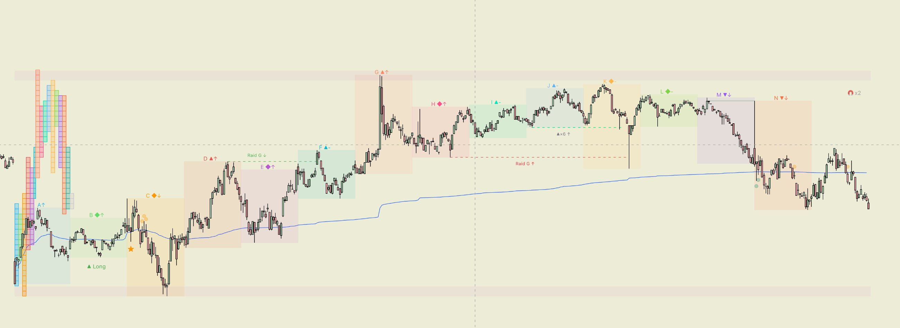

Market Profile на 1m — вся сессия в одном индикаторе
Relief строит TPO-профиль из 30-минутных периодов A–Z на графике TradingView. Не нужно собирать картину из десятка скриптов — уровни, ликвидность и сигналы уже здесь.

Двенадцать модулей — каждый включается и выключается отдельно.
30-минутные блоки с двойной меткой: направление диапазона (▲/▼/◆) и направление свечи (↑/↓). В период A детектирует Open Drive — однонаправленное давление без контрдвижения.
Вертикальные кубики по тикам по алгоритму TV TPO с tie-break по близости к центру. Совместим с настройкой «Ticks per row» стандартного индикатора TradingView.
Session VWAP от старта сессии. Первый тест фитилём — ★, остальные — кружки. На периоде B — балльный bias ▲ L 1–5/5: VWAP, направление A/B, пробой IBH/IBL и позиция относительно IB Mid.
Уровни Value Area вчерашнего дня. Тип открытия (Outside/Inside) определяется автоматически. Тест фитилём и пробой телом — визуально различаются по силе сигнала.
Непротестированные POC предыдущих дней — до 60 дней глубины. Три визуальных состояния: нетронутый, тест фитилём, пробой телом. Цвет меняется автоматически.
Poor High/Low — экстремум с менее чем двумя TPO-периодами: незавершённый аукцион. Single Print — одиночные ценовые уровни профиля, выделяются фоновой зоной.
Raid G — ложный пробой экстремума с быстрым возвратом. Raid S — закрепление за уровнем N+ баров. Сигнал подтверждается или удаляется через N свечей.
Equal Highs/Lows — зоны скопления стопов за уровнями многократного касания. Кластер уровней в радиусе X пунктов помечается магнитом. HL Sweep после серий ▲/▼.
IB за периоды A+B с расширениями 0.5×, 1×, 1.5×, 2×. A-High/A-Low, IB Mid, Open Drive. Day Type в инфо-панели: Trend, NV, Tight, ORR.
Готовые ticks-per-row для популярных контрактов — FDAX, NQ, YM — или ручная настройка под любой инструмент.
Таблица в правом углу: Open Drive, Day Type, Open, B vs A, Struct — контекст сессии без переключения индикаторов.
Свинговая структура на 1m — три режима чувствительности (3 / 5 / 8 TPO-строк). BOS — пробой в сторону предыдущего пробоя (продолжение). CHoCH — пробой в обратную сторону, первый сигнал смены тренда. Линии зигзага опциональны, BOS/CHoCH работают независимо от них.
Все метки появляются прямо на графике — без отдельного окна.
Первый символ — направление диапазона (H/L vs предыдущий). Второй — направление open→close. Серия ▲ или ▼ без прерываний учитывается в HL Sweep.
Цена вышла за экстремум предыдущего периода и закрылась обратно. Стопы собраны, вероятный разворот. Через N свечей подтверждается или удаляется.
Цена закрылась за экстремумом или провела N баров за ним. Сильное снятие с удержанием. Вероятное продолжение движения.
На периоде B — оценка ▲ L 1–5/5 или ▼ S 1–5/5: VWAP, направление A и B, пробой IBH/IBL, позиция относительно IB Mid. Самостоятельная метка на графике — контекст для входа, не фильтр других сигналов.
После N периодов подряд ▲ или ▼ цена выходит за последний экстремум и быстро возвращается. Число = длина серии. Признак истощения тренда.
Outside (above) — открытие выше pVAH, бычий контекст. Outside (below) — ниже pVAL, медвежий контекст. Inside (danger) — внутри Value Area, двусторонний аукцион.
Уровни многократного касания без пробоя — скопление стопов. Кластер из N таких уровней в радиусе X пунктов помечается 🧲 — сильная зона притяжения.
В периоде A нет ни одного TPO-кубика против направления движения. OD↑ — только бычьи кубики, OD↓ — только медвежьи. Самый сильный признак трендового дня с первых минут сессии.
После выхода цены за Initial Balance уровни 0.5×, 1×, 1.5× и 2× становятся зонами реакции. Выход за IB × пороговое значение к концу сессии → Trend Day.
Маркер на первом касании середины IB в период C+. Главный магнит при балансирующем дне — появляется сразу после закрытия периода B.
Пробой свинг-экстремума в сторону, противоположную предыдущему пробою, — первый сигнал смены тренда. В отличие от BOS (пробой по направлению предыдущего), CHoCH ловит именно разворот структуры.
Пробой предыдущего свинг-максимума (BOS↑) или свинг-минимума (BOS↓) в сторону предыдущего пробоя — продолжение тренда. Метка появляется на баре пробоя. Чувствительность свингов настраивается — от коротких 1m-волн до крупных структур.
Последовательность анализа от открытия до входа.
pVAH / pVAL — где вчерашняя Value Area? Открытые nPOC выше/ниже? Это магниты для сегодняшнего движения.
Outside above/below — контекст трендового дня. Inside (danger) — двусторонний аукцион. Смотри Open Drive и тип открытия в инфо-панели.
▲ L n/5 или ▼ S n/5 — балльная оценка по VWAP, A/B, IB и IB Mid. Торгуй в сторону bias, если нет сильного противоположного сетапа.
Выше VWAP — лонги, ниже — шорты. Первый тест (★) особенно значим. Кружки — более слабые тесты фитилём.
Raid G/S и ▲×N/▼×N — снятие ликвидности после серии периодов. Направление стрелки = ожидаемое движение после подтверждения.
После Raid — проверяй структуру свингов. BOS в сторону bias подтверждает продолжение, CHoCH сигналит смену тренда раньше остальных. Комбинируй с Bias и типом открытия.
Poor H/L, Single Print, nPOC и EQH/EQL — зоны куда цена стремится. Используй как тейк-профит или разворотные точки.
Пошаговая методология на Relief — от overnight-контекста до входа по структуре BOS/CHoCH и управления позицией.
Все параметры с описанием и значениями по умолчанию.
| Параметр | По умолч. | Описание |
|---|---|---|
| Сессия | ||
| Старт (час / мин) | 8:00 CET | Начало торговой сессии. GER40 — 8:00 CET, NY — 15:30 CET. |
| Периодов на графике | 15 | Число 30m-блоков для отображения. |
| TPO-профиль | ||
| Ticks per row | 40 | Совпадает с «Ticks per row» стандартного TPO TradingView. Сверяйтесь со своей настройкой. |
| TPO-кубики / Poor H/L / SP | Poor/SP вкл | Кубики опционально. Poor H/L и Single Print — зоны незавершённого аукциона. |
| Баланс (VA / nPOC) | ||
| Процент VA % | 68% | Размер Value Area. Стандарт Market Profile. Совпадает с TV TPO. |
| Открытие дня | Авто | Тип открытия по open периода A vs pVAH/pVAL. Можно задать вручную. |
| nPOC: история (дней) | 20 | Сколько дней хранить непротестированные POC. Максимум 60. |
| VWAP | ||
| Тесты / Bias | вкл | Кружки тестов фитилём, первый тест ★, балльный Bias ▲ L n/5 на периоде B. |
| Bias: N баров периода B | 10 | Последние N 1m-баров периода B для расчёта bias-score. |
| Raid / Ликвидность | ||
| Raid S: баров за уровнем | 5 | Более N баров за уровнем → Sweep. Иначе Grab. |
| Подтверждение (свечей) | 3 | Через N свечей сигнал проверяется и либо подтверждается, либо удаляется. 0 = выключено. |
| HL Sweep после серии ▲/▼ | вкл | Мин. 2 периода в серии, возврат за 3 бара. |
| EQH / EQL | ||
| Магнит: мин. EQ / зона | 2 / 19pt | Кластер из N EQ-уровней в радиусе X пунктов → метка 🧲. |
| Сетапы | ||
| IB Extension / Trend Day | вкл | Расширения 0.5×, 1×, 1.5×, 2×. Trend Day при узком IB + пробой края. |
| A-HL / IB Mid / IBm entry | вкл / выкл | Уровни периода A и середина IB. IBm entry — маркер первого касания IB Mid. |
| Open Drive (OD) | вкл | OD↑/OD↓ на конце периода A, если нет TPO против направления движения. |
| Инфо-панель | вкл | 5 строк: Open Drive, Day Type, Open, B vs A, Struct. |
| Zigzag + BOS + CHoCH | ||
| Зигзаг по структуре | выкл | Визуальные линии свинг-структуры на 1m. Можно отключить линии — BOS/CHoCH при этом продолжают работать. |
| Break of Structure (BOS) | вкл | Метка BOS↑/BOS↓ на баре пробоя предыдущего свинг-экстремума в сторону предыдущего пробоя (продолжение). |
| Change of Character (CHoCH) | вкл | Пробой в сторону, противоположную предыдущему пробою, — первый сигнал смены тренда. |
| Чувствительность | Средние (5) | Мелкие (3) — короткие свинги, Средние (5) — стандарт, Крупные (8) — крупные структуры. Число = откат в TPO-строках. |